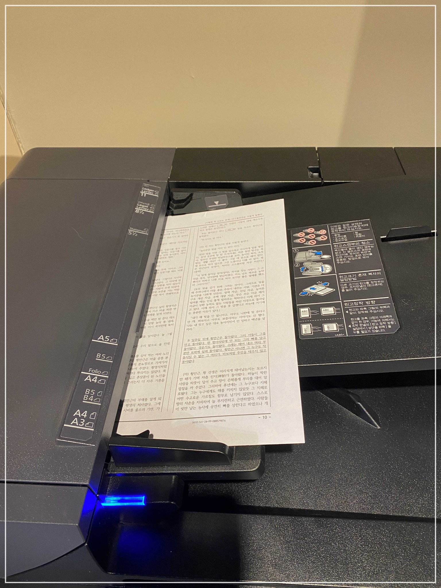
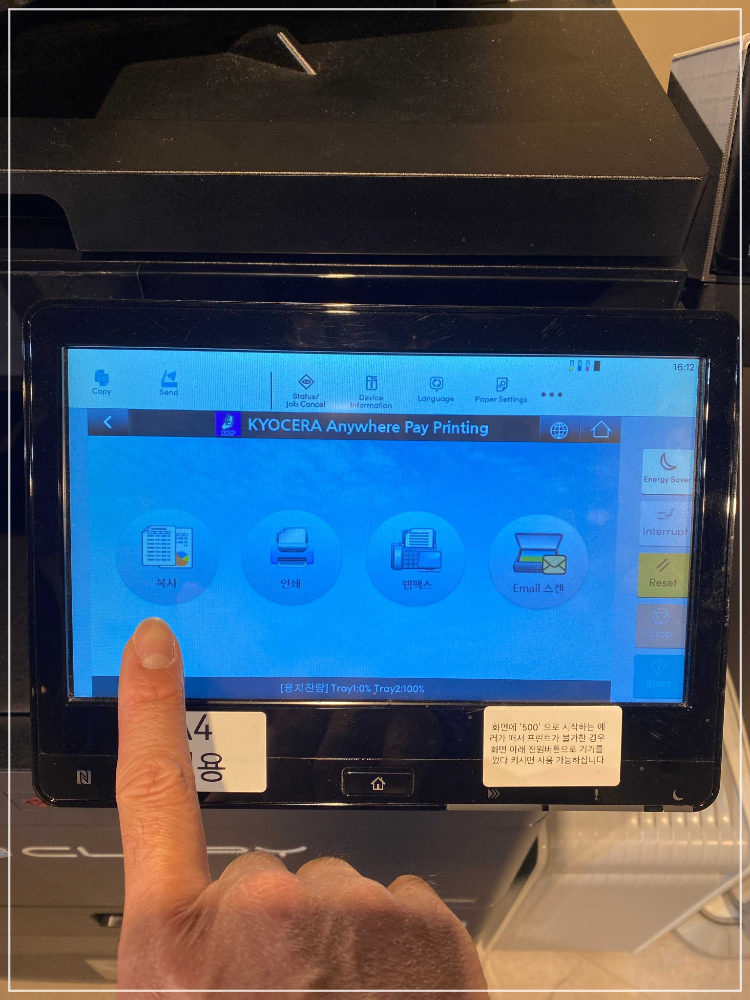
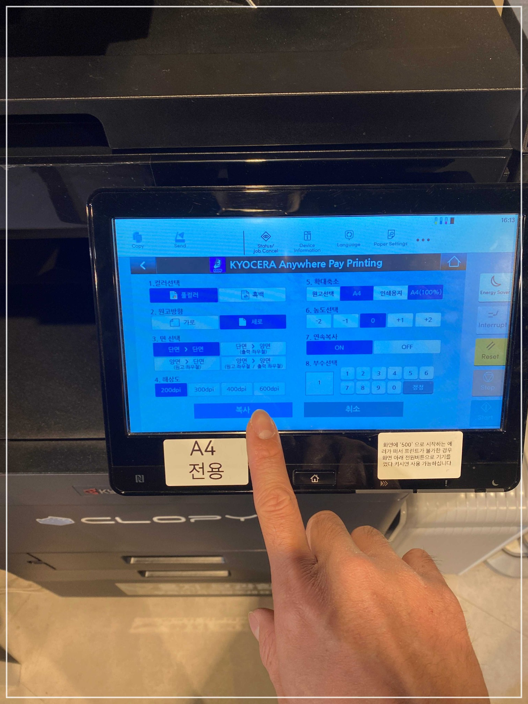
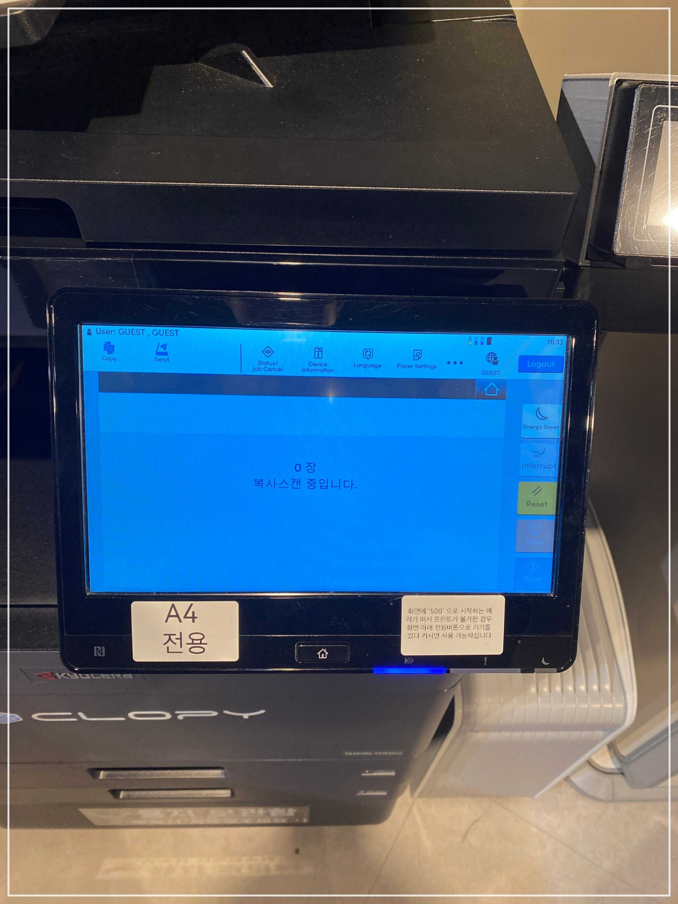
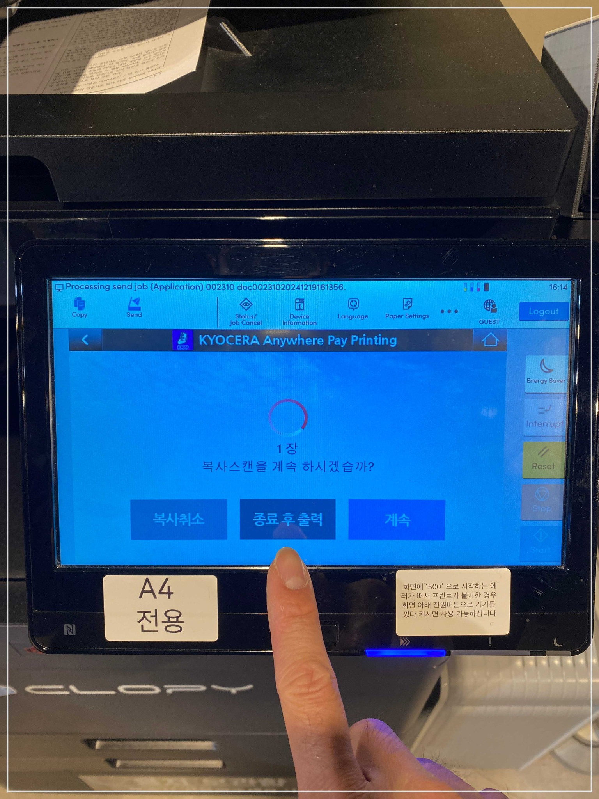
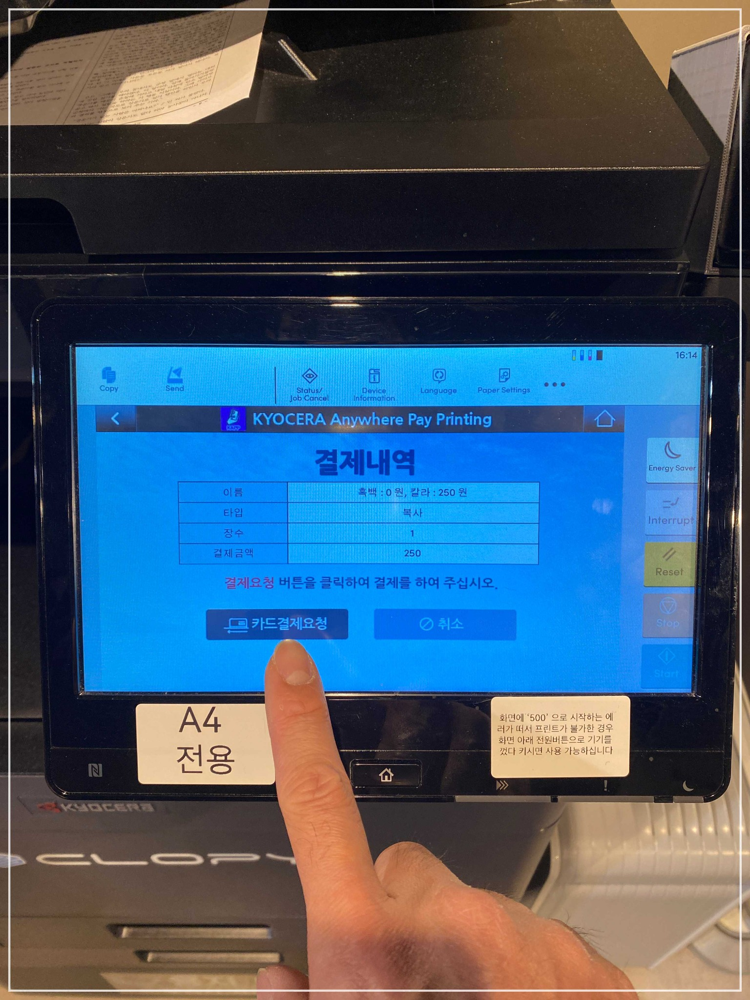
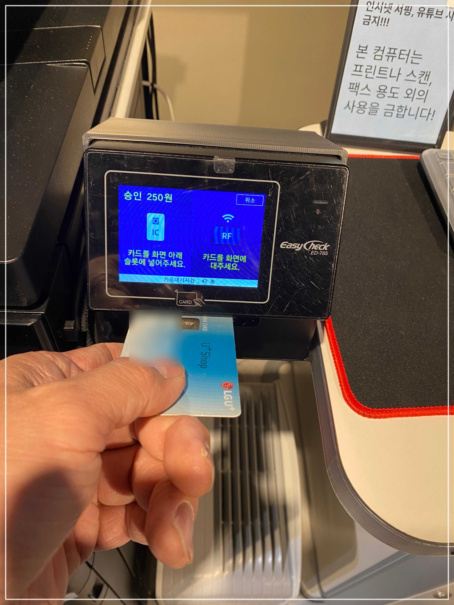
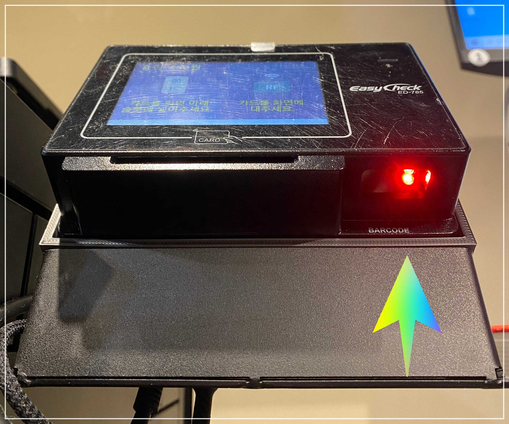
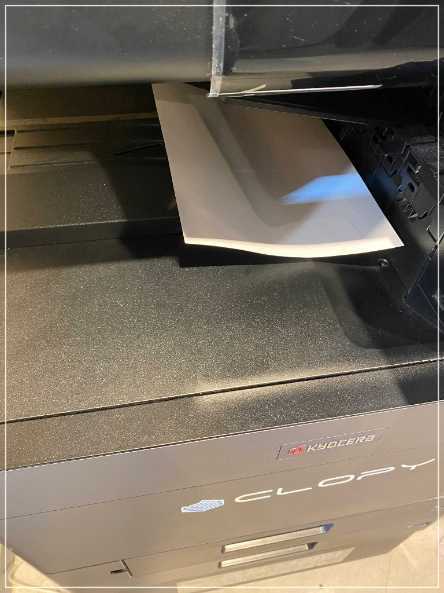

📄 복사 안내
복합기에서 문서를 복사하는 방법입니다. 원고를 올바르게 올린 뒤 옵션을 선택하고 결제하면 됩니다.
📌 복사 순서
-
1
복합기 상단 원고 스캔부에 복사할 문서를 넣습니다. 복사할 면이 하늘을 향하도록(위로) 올려 놓고, 가이드에 맞춰 위치시킵니다. 호치키스 심, 스테이플 등 이물질이 들어가지 않도록 주의하세요.

-
2
복합기 화면에서 복사 버튼을 누릅니다.

-
3
컬러/흑백, 원고 방향, 면 선택, 해상도, 부수 등 옵션을 선택한 뒤 복사 버튼을 눌러 스캔을 시작합니다.



-
4
결제 — 화면에 결제내역이 나오면 카드결제요청 버튼을 누른 뒤, 결제 단말기에서 신용카드, 삼성페이, 카카오페이, 제로페이, 티머니 등으로 결제합니다.



-
5
출력물 확인 — 복합기 출력구에서 복사된 문서를 가져가세요.
